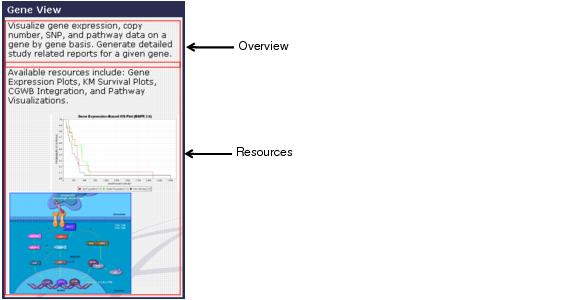

Overview Pane Features The Overview pane provides a brief overview of each workspace and the tools and resources available for research. The following figure is an example of the overview and resource information that is provided for each workspace. 